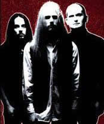
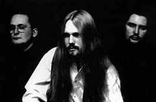

O Therion foi formado em 1987 na Suécia
pelo músico Christofer Johnsson, vocalista, compositor
e principal integrante. A combinação de Heavy Metal
com elementos clássicos, sinfônicos e corais medievais,
faz do Therion um dos maiores expoentes do Metal atual. A criatividade
e ousadia na proposta musical, são mais significativas
que o marketing, caso raro nos dias atuais.
Tudo teve início quando a banda ainda chamava-se
Blitzkrieg, e no ano de 1989 lançou as demos Paroxysmal
Holocaust com 600 cópias em cassete, e pouco depois
Beyond The Darkest Veils Of Inner Wickedness. Nesta época,
a banda arcou com os custos das gravações e das
cópias. No ano seguinte, foi gravada e lançada a
terceira demo intitulada Time Shall Tell. Neste período,
vários nomes foram cogitados, porém Therion
foi adotado definitivamente. Segundo Christofer, o nome Blitzkrieg
já não era coerente com o estilo musical, já
que a essa altura a banda fazia um som mais sofisticado.
Em
1991, o álbum Of Darkness... foi lançado
pela Deaf Records, trazendo composições do período
de 1987 a 1989. Assim, ainda estão presentes fortes influências
do Death Metal anterior. Em dezembro o álbum Beyond
Sanctorum foi gravado pela Active Records. Algumas faixas
trazem um vocal feminino e um masculino "limpo", além
dos teclados mais presentes e elementos da música árabe.
O álbum Symphony Masses: Ho Drakon
Ho Megas foi lançado em 1993 pela Megarock / Nuclear
Blast. Desta vez, foram introduzidos elementos do Heavy Metal
tradicional dos anos 80, além da influência clássica
e industrial, e mantidas as adições árabes.
Em 1995 o Therion lançou o single Beauty
in Black, que vendeu 12.000 cópias em toda a Europa
e ratificando o sucesso, demonstrando que a legião de fãs
se alastrava pelo continente. No mesmo ano, o álbum Lepaca
Kliffoth inseriu uma orquestra sampler e dois solistas de
ópera, além dos vocais mais melodiosos de Christofer
Johnsson.
O álbum Theli lançado em
1996, consagra a banda como precursora de um novo estilo musical
que ia além do Metal. As letras inspiradas em livros e
vivências de Christofer, foram escritas muito tempo antes,
mas a banda ainda não havia alcançado a maturidade
necessária para que estas faixas fossem gravadas. Ainda
em 1996, Siren of the Woods foi lançado e a música
homônima é a primeira faixa a ser executada nas rádios
européias. Por ser mais melodiosa que as anteriores, esta
música despertou um interesse maior das gravadoras. Em
1997 o Therion lança A' araq zaraq: Lucid Dreams,
completando a primeira década da banda. Algumas faixas
foram compostas para Theli, mas não combinavam
com a proposta do álbum. Ainda em A' araq zaraq: Lucid
Dreams, foram inclusas covers gravadas muito tempo antes.
A experiência bem sucedida de Siren
of the Woods levou o Therion a lançar o single Eye
of Shiva, que trazia quatro músicas especialmente
gravadas para divulgação nas rádios. Por
exemplo, a faixa Eye of Shiva traz duas versões,
sendo uma delas editada para as rádios. A mesma versão
da faixa The Rise of Sodom and Gomorrah foi usada no
álbum Vovin que seria lançado meses depois.
Desta forma, a banda tornou-se mais acessível, e Vovin
ganhou grande repercussão.
Posterior ao Crowning of Atlantis, foi
lançado o álbum Deggial em 2000, que demorou
três meses para ser gravado. Neste álbum, Christofer
introduziu também instrumentos de sopro e uma orquestra
de tambores.
O
décimo álbum intitulado Secret of the Runes
foi lançado em 2001. Menos agressivo e mais melancólico
que Deggial, este trabalho foi baseado no folclore nórdico.
Os nove mundos que compõem o Yggrasil da mitologia,
foram citados ao longo de nove faixas, além da simbologia
ocultista das tradições nórdicas. A base
musical desta obra é o clássico compositor alemão
Richard Wagner, que também citava a mitologia dos povos
saxões em suas músicas. A turnê de Secret
of the Runes realizada no mesmo ano, passou pela Europa e América
Latina. No Brasil, foram feitas apresentações em
Curitiba, Porto Alegre e São Paulo.
No final de 2001, foi lançado Bells
of Doom. Este álbum é uma coletânea de
versões muito raras do início da carreira, gravadas
especialmente para o fã-clube. Em 2002, gravam Live
in Midgard, com os 24 maiores sucessos desde 1987. Este é
o único ao vivo, gravado em Columbia, Budapeste e Hamburgo.
Depois de três longos anos de espera por
parte dos fãs, o Therion lança mais uma obra-prima
em maio de 2004, ou melhor duas: Lemuria e Sirius
B. Vendido primeiramente como álbum duplo, novamente
estoura em todo o mundo com a continuação do estilo
que vinha seguindo desde Theli. O trabalho foi fruto de 9 meses
em que 170 pessoas, entre músicos e cantores, participaram
das gravações. Com guitarras distorcidas, orquestras
sinfônicas e coros góticos, o Therion mantém
sua hegemonia em relação às bandas que fazem
a fusão do erudito com o Heavy Metal, mostrando o aperfeiçoamento
cada vez maior de seu estilo.
Em 27 de agosto de 2004,
a banda faz sua única apresentação no Brasil
pela turnê do novo trabalho, embora já tivesse feito
um show em 2001. Com um show de duas horas e meia, levam à
loucura os paulistas no Directv Music Hall, esbanjando
disposição com performances verdadeiramente
épicas.
Em 2005, o Therion deu continuidade à divulgação
de Lemúria e Sirius B. As turnês
atravessavam a Europa e levavam uma multidão de expectadores.
Em dezembro, a banda faz uma apresentação totalmente
orquestrada na Romênia. No ano seguinte, entre julho e setembro,
foram gravadas as músicas que comporiam o novo trabalho.
Neste caso, os "novos trabalhos".
Mais uma vez o Therion inova e lança,
em janeiro de 2007, um álbum duplo. Gothic Kabbalah
traz oito faixas no primeiro CD e mais sete no segundo CD. Com
a participação de vários músicos,
estes discos mantêm a consagrada proposta musical: arranjos
exuberantes inseridos numa imensa variedade sonora.
Ainda, é lançado o Celebrators
of Becoming, um "digipack" com quatro DVD’s,
contendo apresentações ao vivo e vários videoclipes;
e mais dois CD’s também ao vivo. Sem dúvida,
tanto o Gothic Kabbalah quanto o Celebrators of Becoming
são verdadeiros presentes para os fãs da banda.
Após vinte anos de carreira, o Therion
já passou por várias mudanças, tanto entre
os integrantes como na musicalidade. Mas a sofisticação
e a inovação musical são características
que se mantêm presentes em todo esse tempo.
Por
Spectrum
Downloads
Disponíveis: